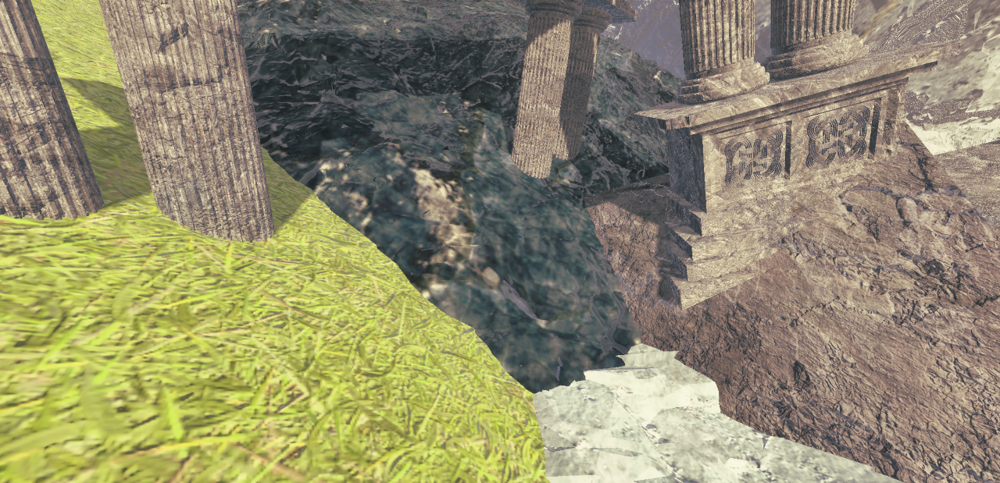
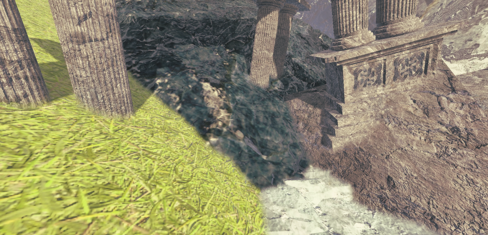
Idea
In a previous article we went over a technique to blend seams of meshes by mirroring pixels in
post-processing.
However the basic implementation ran very slow and was not practical.
In this article I'll go over how to improve the technique using indirect compute shaders.
We'll be using OpenGL for simplicity but the code is practically identical on different
platforms
Recap
We will go over the steps briefly again, but the previous article goes more in depth into the base technique
Previous articlePasses
The technique relies on 3 logical passes,
First we have to find where the object seams are.
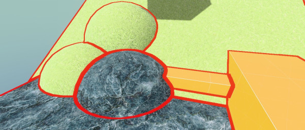
Then we have to find the exact uv offset to each closest seam, we use to mirror around
after.
This is the expensive part so we should only do this on the pixels close to the seams
Image shows UV offsets to seam
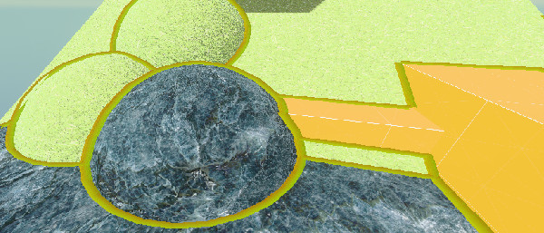
Then by using these offsets to sample the other side of the seam, we can mirror the pixels.
This allows us to blend while keeping the texture detail of the object.
Outlined rock to show where the seam is; the mirror is not perfect, but that is barely noticeable in practice
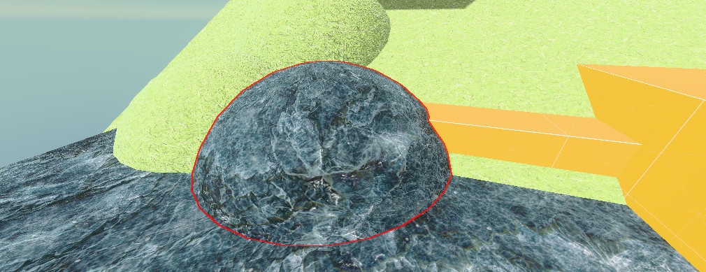
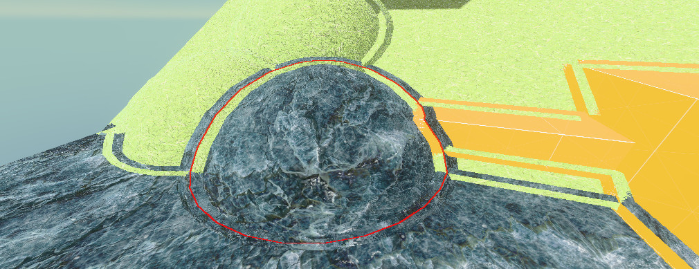
Masking
Our first step is masking where the seams are.
There are many ways to check this. To allow the most control over where the seams are, I
will be using a per-object ID
As an example, you can do this using either a stencil ID or a separate output in your
shading or GBuffer pass.
To find the seams we can run a basic outline shader on this:
// GLSL, Compute:
float aspect = float(u_resolution.x) / float(u_resolution.y);
vec2 directions[4] =
{
vec2(1, 0),
vec2(-1, 0),
vec2(0, aspect),
vec2(0, -aspect)
};
bool foundSeam = false;
// Scale by pixel's depth to make outlines not grow over distance
float maxRange = u_blendRadius / sceneDepth;
// Check in 4 cardinal directions for ID change
for (int i = 0; i < 4; i++)
{
vec2 offset = directions[i] * maxRange;
vec2 sampleUV = uv + offset;
uint otherId = textureLod(u_id, sampleUV,0).x;
// check if differing id
if (otherId != objectId)
{
foundSeam = true; // - Found seam!
}
}
if (foundSeam) {} // Now we can check if we found a seam
Now it might seem tempting to just return here if there is no seam and then run the expensive
part of the shader.
However, this would barely improve performance, which is why we will use indirect dispatches
Indirect compute shaders
GPU warps
But why would a return statement be so slow on the GPU?
This is due to how the GPU orders tasks.
(keep in mind i will be oversimplifying here)
When we run a compute dispatch on the GPU, our dispatch groups of threads are run in even
bigger groups
also called warps (or waves).
Let's say we run this
layout(local_size_x = 4, local_size_y = 4) in;
void main()
{
// Logic
}
glDispatchCompute(num_groups_x: 8, num_groups_y: 8, num_groups_z: 1);
This will run 32x32x1=1024 threads on our GPU
Let's say our GPU supports 32 threads in a warp,
That means our program will run in 32 warps of 32 threads.
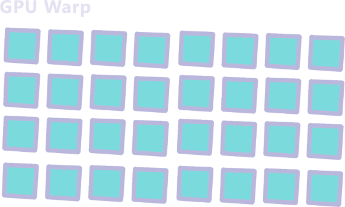
Since these warps are executed together it has to wait for all threads in the warp to be
finished before starting a next one.
This is fine when all threads are basically the same duration but will slow things down
if
our threads have a lot of branching.
For example, if our program looked like this:
layout(local_size_x = 1, local_size_y = 1) in;
void main()
{
uint id = gl_GlobalInvocationID.x;
if (id % 2 != 0) // If the id is an odd number
{
sleep(500ms); // example, (sleep function doesn't actually exist)
}else {
return;
}
}
This means our warp will look like this
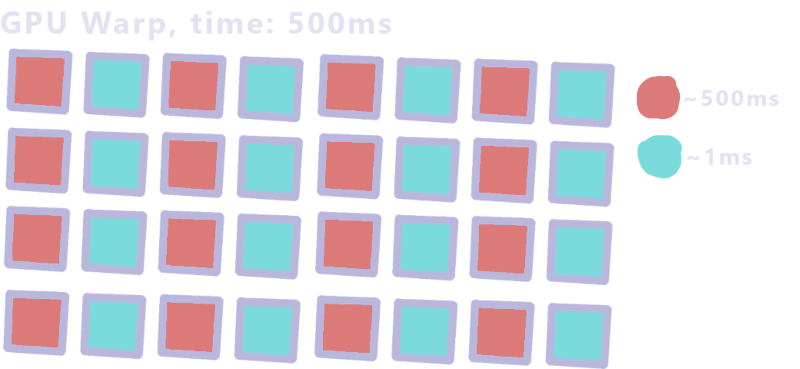
The warp takes ~500ms since it has to wait for the longest thread.
That means adding a mask to our effect doesn't help a lot if a warp contains an unmasked
pixel.
Luckily there is a solution.
Indirect dispatches
Instead of putting everything in 1 compute shader, we can separate it into 2
separate
dispatches.
In our first shader we just run the mask code and output the found locations in a
buffer:
// GLSL, Compute:
layout(local_size_x = 8, local_size_y = 8) in;
// This is the buffer we will output in <changed>
layout(std430, binding = 0) buffer ArgBuffer { <changed>
// The arguments the second pass will be dispatched with <changed>
uint dispatch_x; <changed>
uint dispatch_y; <changed>
uint dispatch_z; <changed>
<changed>
// how many locations we written <changed>
uint count; <changed>
// pixel locations for second pass <changed>
uvec2 pixels[]; <changed>
}; <changed>
/* In HLSL we would instead use
AppendStructuredBuffer<uint2> pixelLocations;
*/
void main() {
uvec2 coord = gl_GlobalInvocationID.xy;
// Guard for over dispatching
if (any(greaterThanEqual(coord, u_resolution))) return;
vec2 uv = (coord+0.5) / vec2(u_resolution);
float rawDepth = textureLod(u_depth, uv,0).x;
float sceneDepth = LinearizeDepth(rawDepth, u_nearfarplane.x, u_nearfarplane.y);
uint objectId = textureLod(u_id, uv,0).x;
float aspect = float(u_resolution.x) / float(u_resolution.y);
vec2 directions[4] =
{
vec2(1, 0),
vec2(-1, 0),
vec2(0, aspect),
vec2(0, -aspect)
};
bool foundSeam = false;
// Scale by pixel's depth to make outlines not grow over distance
float maxRange = u_blendRadius / sceneDepth;
// Check in 4 cardinal directions for ID change
for (int i = 0; i < 4; i++)
{
vec2 offset = directions[i] * maxRange;
vec2 sampleUV = uv + offset;
uint otherId = textureLod(u_id, sampleUV,0).x;
// check if differing id
if (otherId != objectId)
{
// Add the found location to our buffer <changed>
uint slot = atomicAdd(count, 1u); // Thread safe way of counting where we are in the buffer <changed>
pixels[slot] = coord; <changed>
return; <changed>
}
}
}
We can then run our second pass only on the pixels that we got from this buffer.
For this, we have to fill in the dispatch counts in our buffer,
In some APIs there are functions for this but we'll be using a small compute shader.
// GLSL, Compute:
layout(local_size_x = 1) in;
layout(std430, binding = 0) buffer ArgBuffer {
uint dispatch_x;
uint dispatch_y;
uint dispatch_z;
uint count;
uvec2 pixels[];
};
void main() {
// Copy the count into the dispatchSize
// We divide by the local group size of the next pass which in my case is 64
dispatch_x = ceil(count / 64.0);
dispatch_y = 1u;
dispatch_z = 1u;
}
Then we can run all this from the cpu like this:
// First clear our argumentBuffer
uint32_t resetData[4] = {0, 1, 1, 0}; // dX=0, dY=1, dZ=1, count=0
glNamedBufferSubData(buffer.meshSeamData.ssbo, 0, sizeof(resetData), resetData);
// Mask pass
glUseProgram(m_meshblendMaskProgram);
glBindBufferBase(GL_SHADER_STORAGE_BUFFER, 0, buffer.meshSeamData.ssbo);
... /// Set uniforms
static constexpr int KERNEL_SIZE = 8;
glDispatchCompute((buffer.width + (KERNEL_SIZE - 1)) / KERNEL_SIZE,
(buffer.height + (KERNEL_SIZE - 1)) / KERNEL_SIZE, 1);
// Wait till arg buffer filled
glMemoryBarrier(GL_SHADER_STORAGE_BARRIER_BIT);
// Copy counter into dispatchX
glUseProgram(m_meshblendArgCountProgram);
glBindBufferBase(GL_SHADER_STORAGE_BUFFER, 0, buffer.meshSeamData.ssbo);
glDispatchCompute(1, 1, 1);
// Wait till arg buffer filled
glMemoryBarrier(GL_SHADER_STORAGE_BARRIER_BIT | GL_COMMAND_BARRIER_BIT);
// Blend/Search pass
glUseProgram(m_meshblendBlendProgram);
... // Set uniforms
//Bind the argumentbuffer as use for the dispatch size
glBindBuffer(GL_DISPATCH_INDIRECT_BUFFER, buffer.meshSeamData.ssbo);
glDispatchComputeIndirect(0);
Searching
Now that we know where to run our blend we have to find the actual seams
For every blended pixel we need the exact offset, we need this for 2 things.
We use double this offset as the sample location to get the mirrored side
and we need the length of this offset to know how much to blend the pixel
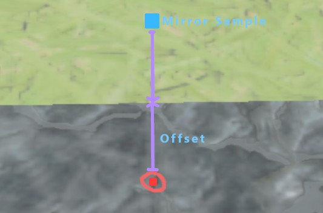
In the previous article we used a square search kernel, however this becomes either very slow or
creates a lot of artifacts at blend sizes more than a few pixels
Instead we will be using a refining search which allows us to find the seam more accurately
with fewer samples.
We sample a big circle around our pixel to find the seam direction,
then, using the direction we find, we sample a smaller circle around that direction.
We do this for a set amount of iterations
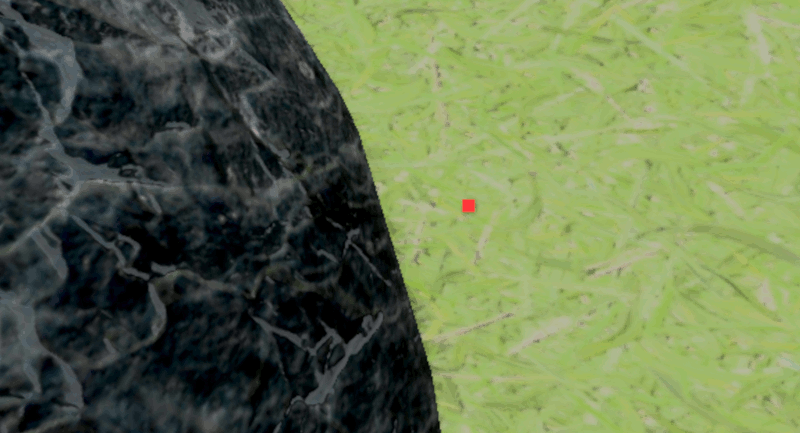
The code would then look something like this:
//GLSL Compute, Blend Pass
void main() {
uint idx = gl_GlobalInvocationID.x;
if (idx >= count) return;
// We get the coords from the first pass
uvec2 coord = pixels[idx];
vec2 uv = (coord+0.5)/vec2(u_resolution);
float rawDepth = textureLod(u_depth, uv,0).x;
float sceneDepth = LinearizeDepth(rawDepth, u_nearfarplane.x, u_nearfarplane.y);
uint objectId = textureLod(u_id, uv,0).x;
bool selfBlendsSelf = (objectId & (1u << 11)) != 0u;
bool selfBlendsOthers = (objectId & (1u << 10)) != 0u;
float maxRange = u_blendRadius / sceneDepth;
float aspect = float(u_resolution.x) / float(u_resolution.y);
float minDist = 9999999;
vec2 closestSeamLocation = vec2(0, 0);
// iteration settings
const int refineIterations = 8;
const int circleSteps = 16;
// The refining search
for (int iter = 0; iter < refineIterations; iter++)
{
// Stepsize halves every iteration
float stepSize = maxRange / pow(2, iter);
// We use the previous iteration's offset as a starting location
vec2 closestFound = closestSeamLocation;
for (int i = 0; i < circleSteps; i++)
{
// this is ~2*pi
float angle = (6.283185 * (i)) / circleSteps;
// Since this is UV space we have to device by aspect
vec2 dir = vec2(cos(angle), sin(angle))/aspect;
vec2 sampleOffset = closestFound + dir * stepSize;
vec2 sampleUV = uv+sampleOffset;
uint sampleId = textureLod(u_id, sampleUV,0).x;
if (sampleId != objectId)
{
//Calculate the length of the offset,
float dist = length(sampleOffset*vec2(aspect,1.0));
if (dist < minDist)
{
minDist = dist;
closestSeamLocation = offset;
}
}
}
}
Blending
Now that we have the seam offsets we can mirror and blend them.
To do this we just use double the seam offset as a sample position and lerp based on the offset
length.
We then combine with a weight based on depth to make sure we only blend edges that are actually
connected.
//GLSL Compute, Blend Pass
... /// Search loop
// The distance from the search
float dist = minDist;
// Color of the current pixel
vec4 sceneColor = textureLod(u_color, uv,0);
// Doubling the offset gives us a mirrored location
vec2 finalOffsetUV = uv + closestSeamLocation * 2;
vec4 otherColor = textureLod(u_color,finalOffsetUV,0);
float otherDepth = LinearizeDepth(textureLod(u_depth, finalOffsetUV,0).x, u_nearfarplane.x, u_nearfarplane.y);
// Difference between our depth and mirrored depth, in linear space
float depthDiff = abs(otherDepth - sceneDepth);
// Weight from 0.5-0 how close we are to the seam.
// We make this from 0.5-0 since we want to blend halfway when distance is close to zero.
float spatialWeight = clamp(0.5 - (dist / maxRange),0.0,1.0);
// Weight based on depth difference of the 2 blended objects
float depthWeight = clamp(1.0 - depthDiff / (u_depthfall * u_blendRadius),0.0,1.0);
// Combine the weights
float finalWeight = spatialWeight * depthWeight;
// Optional smooth function makes the blend a bit smoother
finalWeight = finalWeight * finalWeight * (3 - 2 * finalWeight);
imageStore(u_output, ivec2(coord), mix(sceneColor, otherColor, finalWeight));
Performance & Conclusions
Even with these optimisations, the effect is still somewhat expensive, running at around ~2-3ms
at
8(refine)*16(circle) iterations,
depending on how much blends are on screen and the blend
size
settings. This is on my RTX 4060 Laptop GPU at 1920x1080.
But since this is post-processing it is largely independent from scene complexity, and the cost
of the ID generation is very dependent on render setup.
So the amount of work this saves when kitbashing levels is, in my opinion, worth it.
And keeping the technique only in between (certain?) objects makes it so it doesn't impact
artistic intention
Also keep in mind I simplified most of the code in this article, there are definitely more
optimisations to be had.
The performance can also be massively improved by adding noise which I have seen some others do,
Instead of finding the perfect offset only do a couple samples with jittered offsets.
The noise this creates can then be resolved by TAA.
Here are some more varied showcases of the effect:
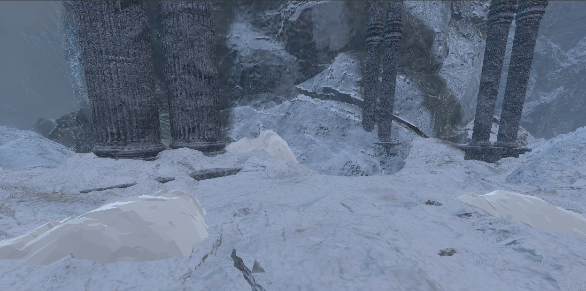
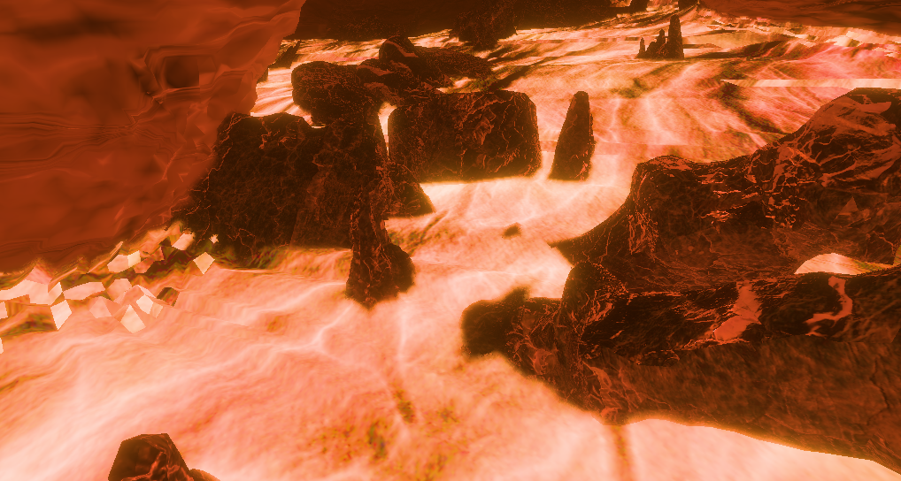
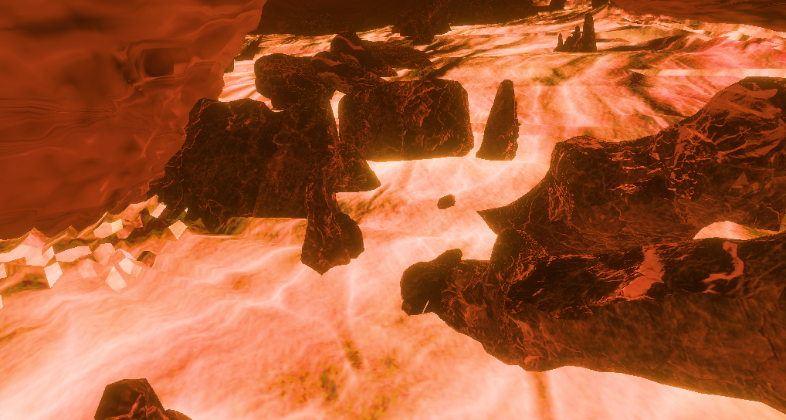